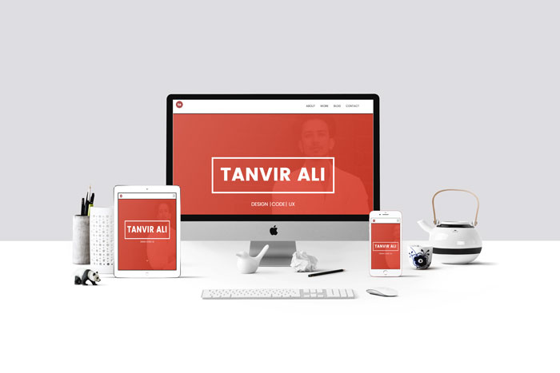
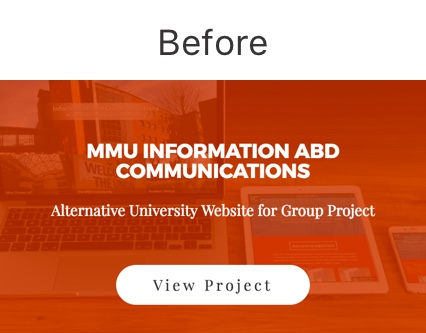
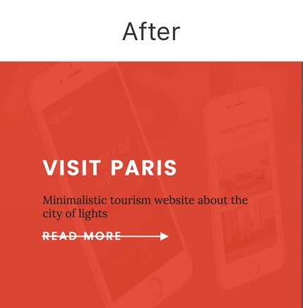
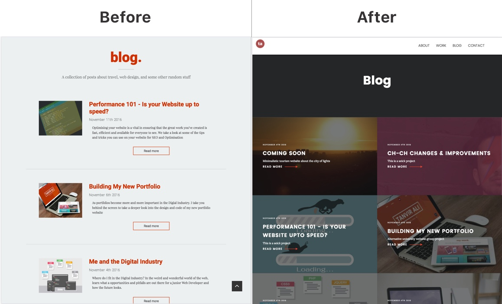

Creating a live portfolio site and being critiqued on every aspect by your peers and tutors was an eye opening experience.
After achieving a first grade in the marking session, I was more concerned about the percentage I missed out on rather then what I achieved and that was the catalyst for some significant changes on my site. That might be strange for some people to think like that, but my mentality is that you can always improve and grow no matter what level you’re at.
Alright, that maybe too dramatic but I managed to do the first two things.
The biggest change to my portfolio is something that isn’t visible to users right away, its all under the hood, the whole thing was recoded from scratch. The reason for this major change was during my first iteration of the website, I took a desktop first approach instead of a mobile first approach, and after finding all so much information about the benefits on mobile first and making my friends implement it, it was only fair I practised what I preached.
During a feedback session I was told my website was “CSS heavy”, and these words really stayed with me, because not only does it affect the performance of the website, it causes extra clutter all throughout my code.
Coding my website in a mobile first approached reduced my unused CSS from 489 to 254 Which overall helps the speed and optimisation of my website.
I implemented the BEM naming convention system throughout my website, the reason was so I and other users can easily navigate the code on my website and not get confused just like I did. After coming back make changes I had no idea where some classes where and which CSS related to them, so by implementing a more organised class structure made my code easier to read and edit.
Bored is probably the wrong word, id say I thrive to do better and challenge myself and that’s been the reason for various design changes.
Despite most of the design staying the same and staying true to my initial idea there was come corrections made to effect the overall look of the site.
Starting off with the “my work” section, previously I had two hover states to view a project, and the feedback from this was inaccessible and was also an extra unnecessary step for the user to take, so this was adapted to a more modern and UI inspired hover state.
 The blog page was completely redesigned to feel more interactive and and informative, instead of the conventional list style I had before, this is a change I personally felt like making because I don’t want my blog to be something people look past, I want my blog to be a stand out feature of different views and opinions I have about the world so redesigning the style of it moves one step closer to achieving this goal.
